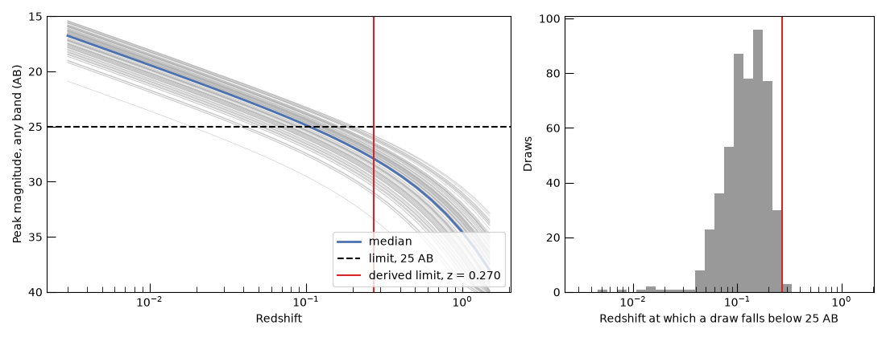
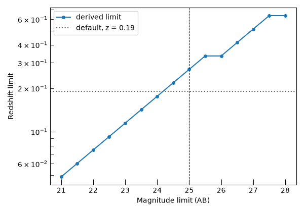

Note
Go to the end to download the full example code.
Setting a Kilonova Class’s Redshift Limit from its SED#
Every ExtragalacticTransient has a redshift limit. This
example shows what it does, derives a good value for the kilonova class from its SED, and sets it.
import numpy as np
from astropy import units as u
from m4opt.missions import uvex
from matplotlib import pyplot as plt
from uvex_transients.missions import downsample_mission
from uvex_transients.models.kilonovae import KilonovaCoolingBlackbodySED
from uvex_transients.transients.kilonovae import Kilonova
from uvex_transients.utils.plotting import get_band_color, set_plot_style
set_plot_style()
The redshift limit#
We start from the built-in kilonova class, which comes with a redshift limit.
kilonova = Kilonova()
print(f"default redshift limit: {kilonova.redshift_limit}")
print(f"integrated rate: {kilonova.integrated_rate:.3g}")
default redshift limit: 0.19
integrated rate: 16.7 1 / (sr yr)
The redshift limit is the farthest redshift out to which the class samples events. Redshifts are drawn from the class’s rate-weighted distribution between 0 and the limit. The comoving volume grows rapidly with redshift, so the sampled events are weighted toward the limit, whatever its value is.
The limit does not decide what counts as detected. Every sampled event is later tested against the survey, through the limiting-magnitude and signal-to-noise cuts, so an event that is too faint is rejected there regardless. What the limit changes is the efficiency. A limit that is too generous fills the sample with distant events that are certain to fail those tests, and all of them are simulated first. A limit that is too low would be worse, since it removes events that would have been detected. The right value is just beyond the farthest redshift at which a kilonova can still be detected.
That redshift depends on the kilonova SED and on how deep the survey is, so we can compute it. The built-in limits of every transient class were derived this way for a depth of 24.5 AB, the UVEX 1 Dwell limit. A deeper survey sees kilonovae farther out, so here we derive the limit for a depth of 25 AB.
Run the optimization#
We ask for the redshift beyond which at most 1% of kilonovae drawn from the SED’s priors are detectable, with 95% confidence. The SED is evaluated for 500 parameter draws on a grid of redshifts, which must extend past the answer. At each redshift a draw’s brightest magnitude over its light curve, in its brightest UVEX band, is recorded. We use UVEX’s downsampled bandpasses, which are much cheaper to evaluate than the dense tables and agree with them to within a stated magnitude tolerance.
The evaluation is the expensive step, and it does not depend on the magnitude limit, so it is done once and reused for every limit.
sed = KilonovaCoolingBlackbodySED()
grid = sed.get_effective_peak_magnitudes(
np.geomspace(0.003, 1.5, 30),
downsample_mission(uvex).detector.bandpasses,
t_min=0.01 * u.day,
t_max=30 * u.day,
n_samples=500,
rng=0,
)
MAG_LIMIT = 25.0
mag_limits = np.arange(21.0, 28.01, 0.5)
curve = sed.get_observability_curve(mag_limits, grid=grid, confidence=0.95, tolerance=0.01)
z_limit = float(curve["z_limit"][curve["mag_limit"].value == MAG_LIMIT][0])
print(curve)
Evaluating peak magnitudes: 0%| | 0/46 [00:00<?, ?chunk/s]
Evaluating peak magnitudes: 4%|▍ | 2/46 [00:00<00:03, 11.61chunk/s]
Evaluating peak magnitudes: 9%|▊ | 4/46 [00:00<00:03, 11.03chunk/s]
Evaluating peak magnitudes: 13%|█▎ | 6/46 [00:00<00:03, 10.99chunk/s]
Evaluating peak magnitudes: 17%|█▋ | 8/46 [00:00<00:03, 11.00chunk/s]
Evaluating peak magnitudes: 22%|██▏ | 10/46 [00:00<00:03, 10.75chunk/s]
Evaluating peak magnitudes: 26%|██▌ | 12/46 [00:01<00:03, 10.98chunk/s]
Evaluating peak magnitudes: 30%|███ | 14/46 [00:01<00:02, 11.03chunk/s]
Evaluating peak magnitudes: 35%|███▍ | 16/46 [00:01<00:02, 10.84chunk/s]
Evaluating peak magnitudes: 39%|███▉ | 18/46 [00:01<00:02, 10.71chunk/s]
Evaluating peak magnitudes: 43%|████▎ | 20/46 [00:01<00:02, 10.69chunk/s]
Evaluating peak magnitudes: 48%|████▊ | 22/46 [00:02<00:02, 10.61chunk/s]
Evaluating peak magnitudes: 52%|█████▏ | 24/46 [00:02<00:02, 10.67chunk/s]
Evaluating peak magnitudes: 57%|█████▋ | 26/46 [00:02<00:01, 10.72chunk/s]
Evaluating peak magnitudes: 61%|██████ | 28/46 [00:02<00:01, 10.74chunk/s]
Evaluating peak magnitudes: 65%|██████▌ | 30/46 [00:02<00:01, 10.87chunk/s]
Evaluating peak magnitudes: 70%|██████▉ | 32/46 [00:02<00:01, 10.82chunk/s]
Evaluating peak magnitudes: 74%|███████▍ | 34/46 [00:03<00:01, 10.79chunk/s]
Evaluating peak magnitudes: 78%|███████▊ | 36/46 [00:03<00:00, 10.73chunk/s]
Evaluating peak magnitudes: 83%|████████▎ | 38/46 [00:03<00:00, 10.71chunk/s]
Evaluating peak magnitudes: 87%|████████▋ | 40/46 [00:03<00:00, 10.78chunk/s]
Evaluating peak magnitudes: 91%|█████████▏| 42/46 [00:03<00:00, 10.64chunk/s]
Evaluating peak magnitudes: 96%|█████████▌| 44/46 [00:04<00:00, 10.59chunk/s]
Evaluating peak magnitudes: 100%|██████████| 46/46 [00:04<00:00, 11.60chunk/s]
Evaluating peak magnitudes: 100%|██████████| 46/46 [00:04<00:00, 10.90chunk/s]
mag_limit z_limit n_censored
mag(AB)
--------- -------------------- ----------
21.0 0.048641208901480236 0
21.5 0.06026598945991675 0
22.0 0.07466898063613439 0
22.5 0.09251414801623194 0
23.0 0.11462413856802268 0
23.5 0.14201820396331205 0
24.0 0.17595918720903359 0
24.5 0.2180117386307893 0
25.0 0.27011444491589176 0
25.5 0.33466919630315783 0
26.0 0.33466919630315783 0
26.5 0.41465191167054094 0
27.0 0.5137497258525305 0
27.5 0.6365309634054243 0
28.0 0.6365309634054243 0
Each thin line below is one draw’s peak magnitude against redshift, and the draw is detected out to where its line crosses the magnitude limit. The histogram collects those crossing redshifts. The red line is the derived limit: the second largest crossing redshift of the 500 draws, which the 95% confidence level at 1% tolerance allows in place of the largest.
fig, (ax_mag, ax_hist) = plt.subplots(1, 2, figsize=(11, 4.2), gridspec_kw={"width_ratios": [1.5, 1]})
ax_mag.plot(grid.z_grid, grid.m_eff[:120].T, color="0.7", lw=0.5, alpha=0.6)
ax_mag.plot(grid.z_grid, np.median(grid.m_eff, axis=0), color=get_band_color("FUV"), lw=2, label="median")
ax_mag.axhline(MAG_LIMIT, color="k", ls="--", label=f"limit, {MAG_LIMIT:g} AB")
ax_mag.axvline(z_limit, color="C3", label=f"derived limit, z = {z_limit:.3f}")
ax_mag.set_xscale("log")
ax_mag.set_ylim(40, 15)
ax_mag.set_xlabel("Redshift")
ax_mag.set_ylabel("Peak magnitude, any band (AB)")
ax_mag.legend(loc="lower right")
z_crossing = np.min(np.where(grid.m_eff > MAG_LIMIT, grid.z_grid, np.inf), axis=1)
ax_hist.hist(z_crossing, bins=np.geomspace(0.003, 1.5, 30), color="0.6")
ax_hist.axvline(z_limit, color="C3")
ax_hist.set_xscale("log")
ax_hist.set_xlabel(f"Redshift at which a draw falls below {MAG_LIMIT:g} AB")
ax_hist.set_ylabel("Draws")
fig.tight_layout()
plt.show()

The grid gives the limit for any survey depth at no extra cost, and the limit grows quickly with depth. The default limit sits at the 24.5 AB point of the curve, so it is right for that depth but too low for 25 AB and anything deeper, where it would cut off detectable kilonovae. The curve is a staircase because each limit is rounded up to the next grid redshift, which keeps it conservative.
fig, ax = plt.subplots(figsize=(6, 4.2))
ax.plot(curve["mag_limit"].value, curve["z_limit"], "o-", ms=4, label="derived limit")
ax.axhline(kilonova.redshift_limit, color="0.4", ls=":", label=f"default, z = {kilonova.redshift_limit}")
ax.axvline(MAG_LIMIT, color="k", ls="--", lw=0.8)
ax.set_yscale("log")
ax.set_xlabel("Magnitude limit (AB)")
ax.set_ylabel("Redshift limit")
ax.legend()
fig.tight_layout()
plt.show()

Assign the limit#
We assign the limit derived for 25 AB to the instance. It is rounded up to a clean number, which only makes it more conservative, and setting it discards the class’s cached rate grid so the new value takes effect immediately. The integrated rate grows because the class now samples a larger volume, which is the price of not clipping the kilonovae that a 25 AB survey can see.
The derived limit covers the SED’s parameter priors only. It does not include Milky Way extinction or sky position.
kilonova.redshift_limit = float(np.ceil(z_limit * 100) / 100)
print(f"new redshift limit: {kilonova.redshift_limit}")
print(f"integrated rate: {kilonova.integrated_rate:.3g}")
new redshift limit: 0.28
integrated rate: 47.1 1 / (sr yr)
Total running time of the script: (0 minutes 5.892 seconds)